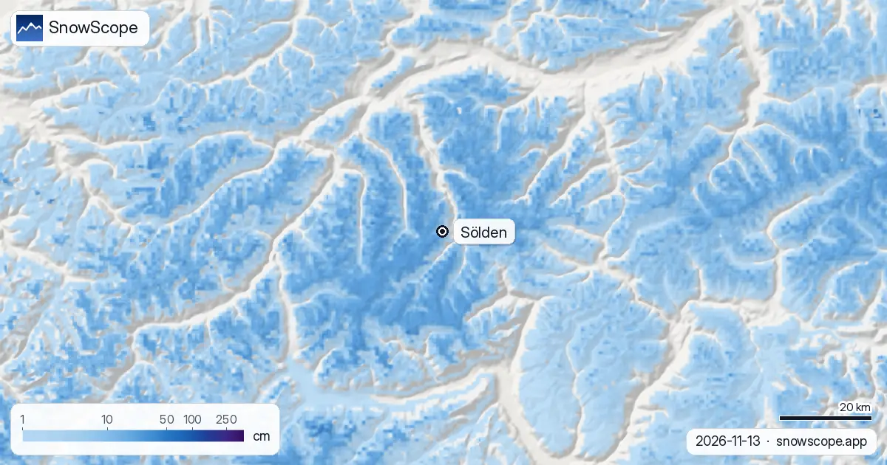
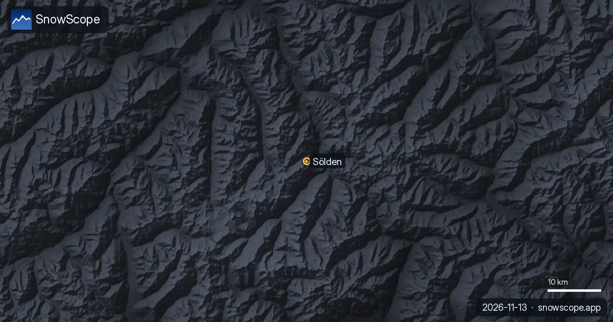

Altezza neve a Sölden: 9 cm sul ghiacciaio, la valle ancora verde (13 novembre 2026)
Se cercate l'altezza della neve a Sölden questa settimana, la risposta dipende da dove vi trovate. In cima, sul lato del ghiacciaio, a 3245 m, la nostra mappa della neve dà circa 9 cm al suolo oggi. Intorno alle stazioni intermedie, a 2295 m, sono circa 5 cm. Giù in paese, a 1346 m, i prati sono ancora verdi. A novembre qui due stagioni si dividono la stessa valle, e quest'anno sono in ritardo tutte e due.
Le previsioni neve in tempo reale per Sölden nell'app SnowScopeAltezza neve, allerte powder e mappa 3D, gratis.
Due quote, due stagioni
Sölden vive del suo dislivello: 1899 m tra l'impianto mappato più basso e quello più alto. A metà novembre questo numero conta più di tutti gli altri. La strada del ghiacciaio porta agli unici pendii dove adesso è davvero inverno. Negli ultimi sette giorni hanno ricevuto 18 cm, 8 cm dei quali nelle ultime 24 ore, e sole e vento li hanno già compattati a 9 cm.
A metà montagna la settimana ha portato 10 cm, e una stazione di misura a quella quota rileva lo stesso strato sottile che mostriamo noi. In paese non c'è niente al suolo e questa settimana non è caduto niente. Chi arriva adesso attraversa l'autunno per salire nell'inverno.

Questa settimana: neve sopra i 1620 m circa
I prossimi sette giorni sono più promettenti. Ci aspettiamo circa 25 cm in vetta, 19 cm a metà montagna e 9 cm alla quota della valle, con solo 3 cm in alto nelle prime 24 ore: il grosso arriva più avanti nella settimana. Le altre previsioni con cui confrontiamo vanno da 14 a 40 cm in vetta; prendete i 25 cm come il centro della forchetta, non come una promessa.
La quota neve è intorno ai 1620 m. In paese cadrà per lo più pioggia o neve bagnata, e solo la metà alta della montagna guadagnerà uno strato vero.
Quanto indietro rispetto a un novembre normale?
Nei nostri 46 inverni passati (1980-81 - 2025-26), un novembre normale ha circa 75 cm in vetta, 29 cm a metà montagna e 7 cm in valle. Anche un novembre magro, un inverno su dieci, tiene circa 21 cm in alto. I 9 cm di oggi sono sotto: per gli standard di Sölden è una partenza lenta. Dicembre di solito sale a 140 cm sul ghiacciaio e 62 cm a metà montagna; è il mese da tenere d'occhio.
La buona notizia: la parte alta di Sölden non ha perso neve nei decenni. Il massimo di un inverno mediano era di 349 cm nei primi 15 dei nostri inverni e di 349 cm negli ultimi 15. A metà montagna è sceso da 170 a 146 cm, in valle da 53 a 44 cm. La quota è l'assicurazione di Sölden.
Quando tutta la montagna diventa bianca
A metà montagna 17 settimane dell'inverno hanno 50 cm o più in 9 inverni su 10; sul ghiacciaio sono 26 settimane. La neve più alta in vetta arriva di solito ad aprile (277 cm), a metà montagna a marzo (133 cm). L'inverno scorso è stato povero: massimo di 203 cm in vetta, 110 cm a metà montagna e 37 cm in valle, ben sotto i 343, 152 e 48 cm di un inverno mediano. Il comprensorio mappato conta 103 km di piste e 39 impianti.
Consigli per sciatori
- A novembre programmate le giornate di sci solo sui pendii del ghiacciaio: le piste verso il paese hanno bisogno di molte altre nevicate.
- Questa settimana aspettatevi pioggia in paese; sopra i 1620 m circa la strada del ghiacciaio richiede gomme invernali e catene a bordo.
- La neve fresca sui pendii ventosi del ghiacciaio forma lastroni: leggete il bollettino valanghe del Tirolo prima di lasciare la pista, e non entrate in zone crepacciate senza guida.
Altre mappe (siti esterni)
Riferimenti e crediti
- Sölden, sito ufficiale (impianti, date di apertura, bollettino neve) www.soelden.com/
- Avalanche.report, bollettino valanghe Tirolo, Alto Adige e Trentino avalanche.report/
Su questi numeri
Numeri della neve: il modello neve di SnowScope, corsa del 12 novembre 2026 per il 13 novembre, a tre quote della località (una stima per l'area, non misure della località), e il nostro storico neve, 46 inverni passati (1980-81 - 2025-26), corretto per la quota. La forchetta confronta altre previsioni meteo alle stesse quote. Lunghezza piste e numero di impianti: mappatura OpenSkiMap. Le previsioni cambiano: guardate la mappa prima di partire.
Bollettini valanghe ufficiali: Avalanche.report – Euregio Tyrol
Cita questo articolo
Per ricerca, didattica o stampa: numeri e grafici sono liberamente riutilizzabili con licenza CC BY 4.0 citando così.
SnowScope (2026), Altezza neve a Sölden: 9 cm sul ghiacciaio, la valle ancora verde (13 novembre 2026), https://snowscope.app/blog/it/2026/11/schneehoehe-soelden-gletscher-und-tal-13-november-2026.html, consultato il 2026-11-13
SnowScope (Atlas Labs). (2026, November 13). Altezza neve a Sölden: 9 cm sul ghiacciaio, la valle ancora verde (13 novembre 2026). SnowScope snow reports. https://snowscope.app/blog/it/2026/11/schneehoehe-soelden-gletscher-und-tal-13-november-2026.html
BibTeX
@misc{snowscope2026schneehoehesoeldengletsc,
author = {{SnowScope (Atlas Labs)}},
title = {Altezza neve a Sölden: 9 cm sul ghiacciaio, la valle ancora verde (13 novembre 2026)},
year = {2026},
month = nov,
howpublished = {\url{https://snowscope.app/blog/it/2026/11/schneehoehe-soelden-gletscher-und-tal-13-november-2026.html}},
note = {Published 2026-11-13 13:02 UTC; accessed 2026-11-13}
}· CC BY 4.0 · Metodi, dati e strumenti →
Sölden: neve e temperatura per quota, quest'inverno vs lo scorso (strumenti) →
Segui Sölden
Gratis: un messaggio quando arriva la neve e il meteo ogni mattina.